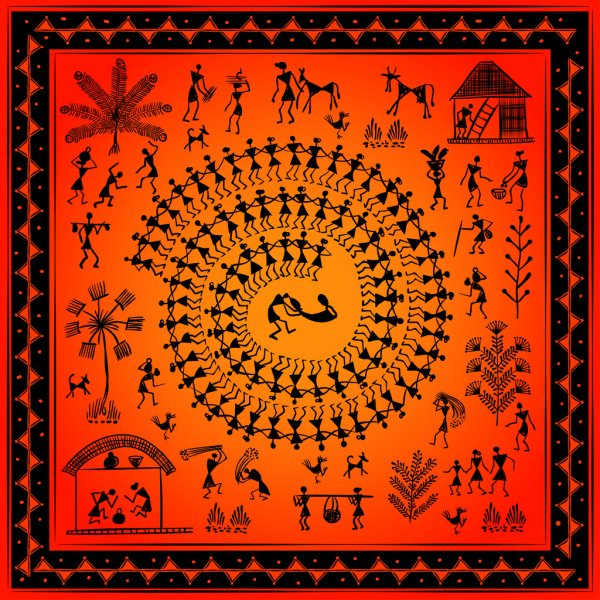
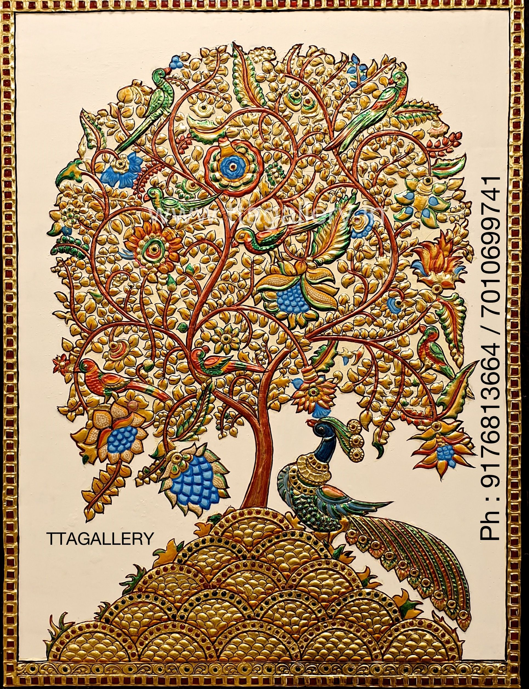

WHEN PASSION MEETS WORK
Love for Coding and Maths
I Am Sujeetha Kannan a certified coding and a maths teacher.So when did i start loving maths......probably at birth because maths has always been my love ever since....... I never remember even a single exam where I did not score a 100.....The least was supposed to be 92 in my 10th board exams even that I am pretty sure would have been a correction error😂.Coding was introduced to me in my 11th Grade though not a professional coder but has always been a passion...........So WHITEHAT JR where my heart bleeds with love because here I work my passion.
places must visit
YERCAUD
I HAD VISITED THIS PLACE IN 2018
Yercaud is a hill station town in the south Indian state of Tamil Nadu. It lies in the Shevaroy Hills, known for their orange groves, and coffee, fruit and spice plantations. Yercaud Lake has a boathouse, and is surrounded by gardens and woods. On the lake’s eastern shore, Anna Park has local plants and a Japanese garden with bonsai. To the southwest, Lady’s Seat vantage point has a watchtower with a telescope.
my favorite art forms
-
warli my favorite art form
The tradition Warli Painting in Maharashtra are among the finest examples of the folk style of paintings.The Warli tribe is one of the largest in India, located outside of Mumbai. Despite being close to one of the largest cities in India, the Warli reject much of contemporary culture. The style of Warli painting was not recognised until the 1970s, even though the tribal style of art is thought to date back as early as 10th century A.D. The Warli culture is centered on the concept of Mother Nature and elements of nature are often focal points depicted in Warli painting. Farming is their main way of life and a large source of food for the tribe. They greatly respect nature and wildlife for the resources that they provide for life.Warli artists use their clay huts as the backdrop for their paintings, similar to how ancient people used cave walls as their canvases
-
tanjore painting my second favorite art form
Thanjavur painting is a classical South Indian painting style, which was inaugurated from the town of Thanjavur (anglicized as Tanjore). The art form draws its immediate resources and inspiration from way back about 1600 AD, a period when the Nayakas of Thanjavur under the suzerainty of the Vijayanagara Rayas encouraged art—chiefly, classical dance and music—as well as literature, both in Telugu and Tamil and painting of chiefly Hindu religious subjects in temples. It is distinguished by its famous gold coating. However, it can safely be surmised that Thanjavur painting, as we know it now, originated in the Maratha court of Thanjavur (1676–1855).It has been recognized as a Geographical indication by the Government of India in 2007-08.Thanjavur paintings are characterised by rich and vivid colors, simple iconic composition, glittering gold foils overlaid on delicate but extensive gesso work and inlay of glass beads and pieces or very rarely precious and semi-precious gems. In Thanjavur paintings one can see the influence of Deccani, Vijayanagar, Maratha and even European or Company styles of painting. Essentially serving as devotional icons, the subjects of most paintings are Hindu gods, goddesses, and saints. Episodes from Hindu Puranas, Sthala-puranas and other religious texts were visualised, sketched or traced and painted with the main figure or figures placed in the central section of the picture (mostly within an architecturally delineated space such as a mantapa or prabhavali) surrounded by several subsidiary figures, themes and subjects. There are also many instances when Jain, Sikh, Muslim, other religious and even secular subjects were depicted in Tanjore paintings.Nataraja flanked by Sivagami, circa 19th century.Sikh Gurus with Bhai Bala and Bhai Mardana – 20th century.Thanjavur paintings are panel paintings done on wooden planks, and hence referred to as palagai padam (palagai = "wooden plank"; padam = "picture") in local parlance. In modern times, these paintings have become souvenirs for festive occasions in South India – colourful pieces of art to decorate walls, and collectors' items for art lovers, as also sadly sometimes, dime-a-dozen bric-a-bracs to be purchased from street corner practitioners.
people who inspired me

SUDHA MURTHY
Sudha Murthy
Sudha Murthy (née Kulkarni) (born 19 August 1950) is an Indian engineering teacher, Kannada, Marathi and English author as well as a Social worker. She is also the Chairperson of the Infosys Foundation. She is married to co-founder of Infosys, N. R. Narayana Murthy.Sudha Murthy began her professional career in computer science and engineering. She is the chairperson of the Infosys Foundation and a member of the public health care initiatives of the Gates Foundation.She has founded several orphanages, participated in rural development efforts, supported the movement to provide all Karnataka government schools with computer and library facilities, and established 'Murty Classical Library of India' at Harvard University.Murthy initiated a bold move to introduce computer and library facilities in all schools in Karnataka and taught computer science. She got "Best Teacher Award" in 1995 from Rotary Club at Bengaluru (erstwhile Bangalore). Murthy is best known for her social work and her contribution to literature in Kannada and English. Dollar Bahu (English: Dollar Daughter-in-Law), a novel originally authored by her in Kannada and later translated into English as Dollar Bahu, was adapted as a televised dramatic series by Zee TV in 2001.[6] Sudha Murthy has also acted in the Marathi film Pitruroon and the Kannada film Prarthana. She has also appeared in Kaun Banega Crorepati season 11 in its Karamveer episode of finale week.
BEST BOOK

RATAN TATA
Ratan Tata
Ratan Naval Tata (born 28 December 1937) is an Indian industrialist, philanthropist, and a former chairman of Tata Sons. He was also chairman of Tata Group, from 1990 to 2012, and again, as interim chairman, from October 2016 through February 2017, and continues to head its charitable trusts.[3][4] He is the recipient of two of the highest civilian awards of India, the Padma Vibhushan (2008) and Padma Bhushan (2000).[5] He is well known for his business ethics and philanthropy.Born in 1937, he is a scion of the Tata family, and great-grandson of Jamsetji Tata, the founder of Tata Group. He is an alumnus of the Cornell University College of Architecture and Harvard Business School through the Advanced Management Program that he completed in 1975.[8] He joined his company in 1961 when he used to work on the shop floor of Tata Steel, and was the apparent successor to J. R. D. Tata upon the latter's retirement in 1991. He got Tata Tea to acquire Tetley, Tata Motors to acquire Jaguar Land Rover, and Tata Steel to acquire Corus, in an attempt to turn Tata from a largely India-centrist group into a global business.
BEST BOOK